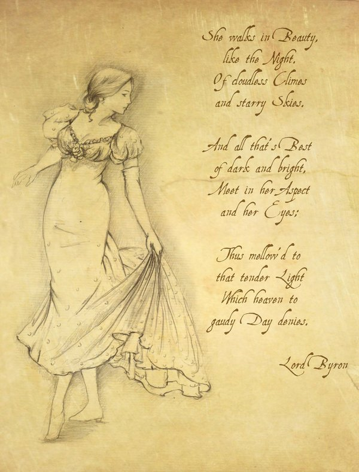

Right now, I'm sitting in the library, and as I raise my head, I see a biography of Chien-Shiung Wu who is a Chinese-American physicist and one of the most famous female physicist in history. You see, the two major physics theories that underpin the functioning of human society are General Relativity and Quantum Mechanics. However, they are indeed incompatible. Scientists have been continuously trying to create a universal theory that combines the two, Standard Model being the most successful theory to date. And the formation of the Standard Model is built upon the contribution of Chien-Shiung Wu, Yang Chen-Ning and Tsung-Dao Lee about CP violation.
In fact, it has been fifteen years since we first met. However, during the first ten years, we had no intersection. In my view, you are one of those excellent students. I like you, and most of it is admiration for your excellent qualities and the pursuit of good. But I also admit that I don't really know you. Last year I went to Qingdao to attend a conference and we had a somewhat interesting afternoon together. I feel like I just fell in love with you at some point during that afternoon.I think I should marry you.
Despite our limited interactions, some of your unique qualities that set you apart from other girls deeply captivate me. You are smart, independent and thoughtful. But at the same time, you are also very considerate, kind and adorable. You have a distinctive personality. Your voice, your hire, your smile, they all attract me. I love watching you eat, seeing you play with kittens, hearing you hum songs and listening you talk. You are the most beautiful girl I have ever met.
For a long time, people around me seen me as an outgoing and optimistic person. Recalling the days of high school, teacher used to change my seat frequently. He told me although I didn't put in much effort in study, my positive mindset could help others. I never consider myself as a social guy, but I get along well with others. I can also handle myself easily in front of other girls I liked. But in front of you, I become foolish, nervous and don’t know what to say. I am afraid of messing up this relationship. And you got a boyfriend, I don't know how to be in a relationship with you and how to handle my feelings.
Once I thought we could be friends, but I was wrong. I don't want to be a friend of you, I want to love you.
I understand you don’t like me. I mean that I’m not those handsome guys, not from a wealthy background, don’t have superpower, no job and even bad at sing. We just have some chitchat occasionally. But there are some other interesting qualities inside me which are not visible on the surface. And I believe that the field I am engaged in has a promising future. From now on, I hope we can start over with this relationship. Let's forget the past. I am no longer the boy who hid in the hotel room be shy to see you, and you are no longer the girl who I admired in my childhood.
From now on, I hope we can start over with this relationship. Let's forget the past. I am no longer the boy who hid in the hotel room be shy to see you, and you are no longer the girl who I admired in my childhood.
I will wait, wait for you to like me. Every Sunday, if I’m available, I'll visit your city. I’ll find a coffee shop or a bookstore or any other place where I can spend a meaningful day. I will send you my location. As I promised before I won't disturb your life. Please don’t make this thing, this relationship heavy. I do this for myself. If one day you change your mind ,if you want to get to know this crazy person better or if you need help. You can always come to find me. I know this is stupid, crazy and juvenile. But five years, ten years even fifty years from now, when I’m looking back my life, I don't want to say that I missed the girl I loved the most in my life. I believe there gonna be an equal relationship between us that includes happiness and hope. Maybe not today, maybe not tomorrow, but soon and for the rest of our life.
I’m not good at writing and I’m not an artistic youth. Byron is one of the few poets I know about. One of his wives was a mathematician. Their daughter Ada Lovelace is considered the first programmer in human history. I want to dedicate this poem to you. 